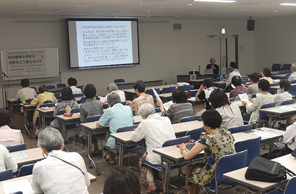

|
|
||
第53回埼玉県消費者大会実行委員会 第53回埼玉県消費者大会は｢自ら考え行動する消費者｣をメインスローガンにかかげ、24団体による実行委員会を結成し、学習と話し合いを続けています。 7月13日(木)10時より浦和コミュニティセンター第15集会室にて、大会にむけた第2回プレ学習会｢核兵器禁止条約は世界をどう変えるのか～核兵器禁止条約とヒバクシャ国際署名の意義を学ぶ｣をテーマに実施し、64人が参加しました。
はじめに、被爆の証言として、しらさぎ会副会長の木内恭子さんより、広島での被爆体験の証言を聞きました。爆心地から1.5㎞で被爆した木内さんからの、奇跡的に無傷で済んだことや、原爆投下後に避難した時の広島市内の様子などの生々しい証言に参加者は聞き入りました。 学習会では、日本被団協代表委員の田中熙巳氏より、長崎での被爆体験から、被団協の結成と被爆の実相を世界に広げることで、国際世論に訴えてきた取り組みが、国連軍縮総会や世界法定運動、NPT再検討会議を通じて核兵器禁止の機運が高まってきたこと。2016年国連総会で核兵器禁止の法的文書交渉開始決議を受けて、今回の核兵器禁止条約に関する交渉国国連会議が開催された経緯について詳しく述べられました。また、核保有国とその同盟国は、核抑止力による安全保障政策に頼っており、核抑止力は核兵器の使用を前提にしていると告発し、核抑止力を変えさせる国民の世論と運動が重要であるとしました。  |
||